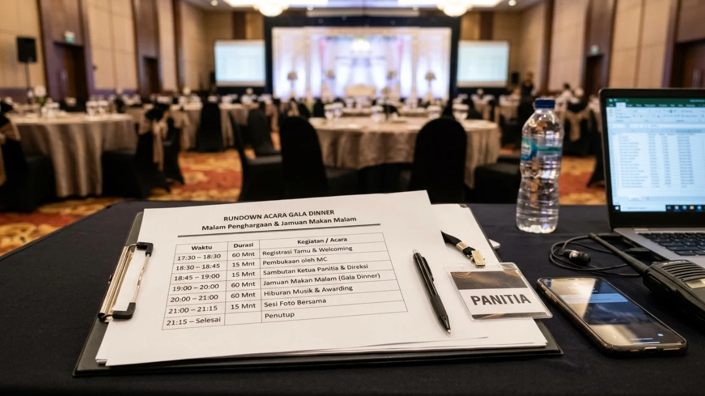

Susunan acara gala dinner formal yang tertata rapi menciptakan alur
perayaan elegan dan tepat waktu. (Ilustrasi)
Susunan acara gala dinner formal yang tertata rapi menciptakan alur
perayaan elegan dan tepat waktu. (Ilustrasi)
Susunan acara gala dinner umumnya terdiri dari registrasi, welcome drink, pembukaan, sambutan, makan malam, hiburan, penghargaan, dan penutupan dalam durasi sekitar tiga sampai empat jam.
- Rundown gala dinner disusun berurutan dari kedatangan tamu sampai penutupan acara.
- Durasi yang umum berkisar tiga sampai empat jam, tergantung jumlah sesi.
- Sambutan dan penghargaan sebaiknya dibatasi agar tamu tetap nyaman.
- Gladi resik dan pembawa acara yang cakap menjaga alur tetap tepat waktu.
DAFTAR ISI
- 1. Mengapa Susunan Acara Menentukan Kualitas Gala Dinner?
- 2. Apa Saja Tahapan Utama dalam Susunan Acara Gala Dinner?
- 3. Bagaimana Contoh Rundown Gala Dinner dari Awal sampai Akhir?
- 4. Berapa Lama Durasi Ideal Gala Dinner?
- 5. Bagaimana Mengatur Sambutan dan Sesi Penghargaan agar Tidak Membosankan?
- 6. Hiburan Apa yang Cocok untuk Gala Dinner?
- 7. Apa Peran Pembawa Acara dan Tim Panitia dalam Menjaga Alur?
- 8. Kesalahan Umum dalam Menyusun Rundown Gala Dinner
- 9. Bagaimana Menyesuaikan Rundown dengan Jenis Gala Dinner?
- 10. Kesimpulan
- 11. FAQ
Mengapa Susunan Acara Menentukan Kualitas Gala Dinner?
Susunan acara menentukan kualitas gala dinner karena rundown mengatur ritme, durasi, dan kenyamanan tamu sepanjang malam, sehingga tujuan penyelenggara tercapai tanpa acara terasa berlarut-larut.
Pada 2026, penyelenggaraan acara bisnis di Indonesia terus mendapat sorotan. Menurut laporan Metro TV tanggal 1 Juli 2026, Indonesia menempati peringkat ke-37 dunia dan keempat di ASEAN dalam industri MICE.
Sementara itu, RRI pada 30 Juli 2026 melaporkan bahwa potensi transaksi bisnis dari Indonesia Business Event Mart 2026 diperkirakan sekitar Rp334 miliar dalam skenario optimistis.
Persaingan antarpenyelenggara membuat tamu semakin terbiasa dengan acara yang rapi dan tepat waktu.
Rundown yang disusun baik membantu panitia memenuhi ekspektasi tersebut. Gambaran umum acara dapat dibaca pada artikel tentang pengertian gala dinner, tujuan, dan panduan lengkapnya.
Apa Saja Tahapan Utama dalam Susunan Acara Gala Dinner?
Tahapan utama gala dinner meliputi registrasi, welcome drink, pembukaan, sambutan, hidangan pembuka, hiburan, penghargaan, hidangan utama, sesi networking, dan penutupan acara.
Registrasi memastikan tamu terdata dan diarahkan ke meja yang benar. Welcome drink mengisi waktu tunggu sekaligus memberi kesempatan tamu saling menyapa. Pembukaan dipimpin pembawa acara, diikuti sambutan dari pimpinan atau ketua panitia.
Hidangan disajikan bertahap, diselingi hiburan agar tamu tidak jenuh. Sesi penghargaan atau presentasi biasanya ditempatkan di antara hidangan agar perhatian tamu tetap terjaga.
Setelah hidangan penutup, tamu diberi waktu berbincang bebas sebelum acara ditutup dengan ucapan terima kasih dan sesi foto bersama.
Bagaimana Contoh Rundown Gala Dinner dari Awal sampai Akhir?
Contoh rundown gala dinner dimulai dari registrasi sekitar pukul 17.30 dan berakhir sekitar pukul 21.30, dengan jeda yang cukup antarsesi agar acara tidak terburu-buru.

Contoh rundown gala dinner berdurasi 3 sampai 4 jam dengan jeda transisi antarsesi yang terstruktur. (Ilustrasi)Berikut contoh rundown yang dapat disesuaikan dengan kebutuhan acara.
- 17.30 - 18.30: Registrasi tamu dan welcome drink
- 18.30 - 18.40: Tamu menempati meja, musik pembuka
- 18.40 - 18.50: Pembukaan oleh pembawa acara dan lagu kebangsaan atau doa
- 18.50 - 19.05: Sambutan ketua panitia dan pimpinan organisasi
- 19.05 - 19.35: Hidangan pembuka diiringi hiburan musik
- 19.35 - 20.05: Sesi penghargaan atau presentasi singkat
- 20.05 - 20.45: Hidangan utama dan penampilan hiburan
- 20.45 - 21.05: Hidangan penutup, undian, atau lelang
- 21.05 - 21.30: Penutupan, ucapan terima kasih, dan foto bersama
Contoh ini bersifat umum. Panitia dapat memperpendek atau menambah sesi sesuai jenis acara, jumlah tamu, dan aturan tempat.
Berapa Lama Durasi Ideal Gala Dinner?
Durasi ideal gala dinner umumnya sekitar tiga sampai empat jam, termasuk registrasi, sehingga tamu menikmati jamuan tanpa kelelahan dan acara tetap sesuai batas waktu tempat.
Durasi dapat bervariasi tergantung konsep. Gala dinner dengan sesi penghargaan panjang atau lelang amal biasanya memerlukan waktu lebih lama.
Sebaliknya, gala dinner penutupan konferensi sering dibuat lebih ringkas karena peserta perlu beristirahat atau berangkat pagi harinya.
Panitia sebaiknya memeriksa jam operasional tempat acara dan biaya tambahan bila acara melebihi waktu sewa. Memberi jeda sekitar lima sampai sepuluh menit di antara sesi juga membantu menjaga ritme tanpa terasa kaku.
Bagaimana Mengatur Sambutan dan Sesi Penghargaan agar Tidak Membosankan?
Sambutan dan sesi penghargaan sebaiknya dibatasi durasinya, dibuat bergantian dengan hidangan atau hiburan, dan dipandu pembawa acara agar perhatian tamu tetap terjaga.
Batasi jumlah pembicara dan beri tahu mereka durasi yang tersedia sebelum acara. Sambutan yang singkat dan padat lebih mudah diingat dibandingkan pidato panjang.
Untuk sesi penghargaan, siapkan naskah pemanggil, urutan penerima, dan petugas pendamping trofi.
Layar visual yang menampilkan foto atau video singkat penerima penghargaan dapat membuat sesi lebih hidup.
Bila penerima banyak, kelompokkan penghargaan per kategori dan sisipkan hiburan di antaranya. Dengan cara ini, tamu tidak menunggu terlalu lama dalam keadaan lapar atau jenuh.
Hiburan Apa yang Cocok untuk Gala Dinner?
Hiburan yang cocok untuk gala dinner mencakup musik akustik atau band, tarian tradisional, pertunjukan seni, serta permainan interaktif ringan yang tidak mengganggu percakapan tamu.
Pemilihan hiburan sebaiknya mengikuti tema dan profil tamu. Untuk acara korporat formal, musik live bernuansa jazz atau akustik sering dipilih karena tidak menutupi percakapan. Untuk acara bertema budaya, tarian daerah dapat memperkuat identitas acara.
Pertunjukan interaktif seperti kuis, undian, atau lelang cocok untuk mencairkan suasana, asalkan durasinya terkontrol. Hindari volume suara berlebihan saat hidangan disajikan.
Pastikan semua pengisi acara sudah menjalani uji suara dan mengetahui urutan tampil sebelum acara dimulai.
Apa Peran Pembawa Acara dan Tim Panitia dalam Menjaga Alur?
Pembawa acara dan tim panitia menjaga alur gala dinner dengan memandu transisi antarsesi, mengawasi waktu, dan berkoordinasi dengan katering, tim teknis, serta pengisi hiburan.
Pembawa acara berperan sebagai penghubung antara panggung dan tamu. Ia perlu memahami rundown, nama tamu kehormatan, dan urutan sesi.
Seorang koordinator panggung, atau stage manager, sebaiknya memegang rundown dan memberi aba-aba kepada pengisi acara.
Tim katering perlu mengetahui kapan setiap hidangan akan disajikan agar sinkron dengan program. Tim teknis mengawasi suara, tata cahaya, dan layar.
Komunikasi cepat melalui grup khusus atau radio komunikasi membantu panitia menangani perubahan mendadak tanpa mengganggu tamu.
Kesalahan Umum dalam Menyusun Rundown Gala Dinner
Kesalahan umum penyusunan rundown meliputi memasukkan terlalu banyak sesi, tidak memberi jeda transisi, mengabaikan waktu penyajian hidangan, dan melewatkan gladi resik sebelum hari acara.
Rundown yang terlalu padat membuat jadwal sering molor. Sesi sambutan yang tidak dibatasi menyebabkan hidangan terlambat disajikan.
Selain itu, sebagian panitia menyusun rundown tanpa berdiskusi dengan katering, sehingga waktu penyajian bertabrakan dengan sesi panggung.
Kesalahan lain adalah tidak menyiapkan rencana cadangan, misalnya bila pengisi acara terlambat atau perangkat teknis bermasalah.
Panitia juga perlu menyadari bahwa tamu biasanya datang tidak serentak, sehingga sesi pembukaan sebaiknya diberi toleransi waktu. Untuk mengendalikan biaya tiap sesi, lihat panduan tentang cara menyusun anggaran gala dinner.
Bagaimana Menyesuaikan Rundown dengan Jenis Gala Dinner?
Rundown disesuaikan dengan jenis gala dinner dengan mengubah porsi sesi inti, misalnya memperpanjang penghargaan pada malam apresiasi atau menambah lelang pada acara penggalangan dana amal.
Untuk gala dinner korporat, porsi apresiasi karyawan dan sambutan pimpinan menjadi inti. Untuk penutupan konferensi, sesi ucapan terima kasih, pengumuman tuan rumah berikutnya, dan networking mendapat tempat lebih besar.
Untuk acara amal, sesi lelang atau donasi perlu waktu khusus dengan pembawa acara yang terampil. Untuk perayaan ulang tahun organisasi, tayangan perjalanan sejarah dan pemotongan tumpeng atau kue menjadi bagian penting. Penyesuaian ini memastikan setiap sesi benar-benar mendukung tujuan acara.
Kesimpulan
Susunan acara gala dinner yang baik berurutan dari registrasi sampai penutupan, berdurasi sekitar tiga sampai empat jam, dan dipandu pembawa acara serta panitia yang berkoordinasi.
Mulailah dengan menentukan sesi inti sesuai tujuan acara, lalu hitung durasi setiap sesi beserta jeda transisinya. Lakukan gladi resik, sinkronkan jadwal dengan katering, dan siapkan rencana cadangan.
Untuk memastikan tamu berpakaian sesuai suasana, baca juga panduan lengkap pada dress code gala dinner untuk pria dan wanita.